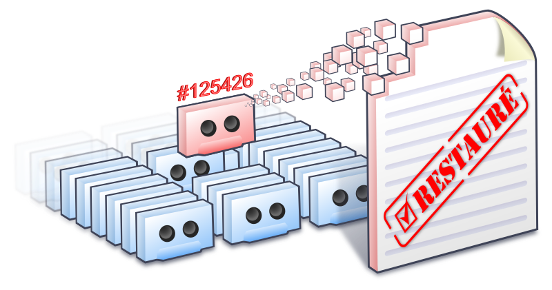

- Mon 31 July 2023
- Informatique
- #autohébergement, #sauvegardes, #chiffrement, #astuce, #opensource
Un point crucial en informatique est l’externalisation des sauvegardes. En effet, si vous ne comptez que sur vos sauvegardes locales (stockées chez vous sur votre PC ou autre), vous allez forcément être punis un de ces jours par une panne de matériel, un cambriolage, etc … et votre vie numérique sera réduite à néant.
L’externalisation des sauvegardes règle donc ce problème, mais dans mon cas, je suis habitué à des solutions vraiment professionnelles, avec des outils et des moyens importants car les enjeux sont de taille pour la clientèle. Mais comment faire lorsque l’on veut cela à l’échelle d’une TPE ou dans le cadre d’un auto-hébergement sans se ruiner ? J’ai longtemps peiné pour trouver une solution à la hauteur de ma radinerie.

L’outil utilisé : Borg
Pour ceux qui ne connaissent pas encore, Borg coche pour moi toutes les cases pour remplir ce rôle. C’est un outil de sauvegarde sérieux qui répondra parfaitement à des besoins quotidiens de sauvegardes automatiques et sécurisées. Il est open-source, et après l’avoir utilisé pendant un moment, je ne peux que le recommander.

Il n’est pas encore aussi évolué qu’un Bacula par son manque de GUI et d’outils à usage professionnel, mais c’est l’un des meilleurs outils de sauvegarde du moment, plusieurs projets peuvent compléter Borg si besoin de combler des manques (ex : Borgmatic).
Je considère bien évidemment que les outils non open-source, tels qu’Acronis, sont à bannir.
Bien que très fiable, bye-bye également le contre-intuitif BackupPC avec son interface à vomir. Il est de toute façon déjà mort, comme en témoigne mon Pull Request resté sans réponse depuis la nuit des temps.
Sebsauvage à écrit un bon article sur Borg si vous voulez vous faire un avis technique avant de l’adopter.
Externaliser où ?
Entrons donc dans le cœur du problème : la thune 💸
Pour avoir une externalisation digne de ce nom sans se ruiner, il faut bien s’embêter, ou trouver des bons plans.
J’ai déjà tenté de le faire à l’ancienne en déplaçant régulièrement des disques durs, mais perdre l’automatisation nocturne est vraiment trop pénible. J’ai également tenté de passer par des amis, ça fonctionne, mais n’espérez pas avoir une solution pérenne. Je me suis retrouvé à déménager ma solution chez un autre chaque année, pour X ou Y raisons ! 😫
Finalement, je me suis décidé à y mettre des sous, mais chercher une solution pour stocker 5 To de sauvegarde dans mon cas, compatible avec Borg et économique, est vraiment difficile.
C’est du côté des casques à pointe que j’ai trouvé le bonheur ! HETZNER propose un service appelé Storage Box, compatible avec Borg et à bas prix (12,97€ les 5 To en 2023 dans mon cas !).
J’exporte depuis quelques mois mes sauvegardes chiffrées chez eux, ça tourne super ! Leur documentation technique est disponible ICI pour relier leur stockage à votre serveur Borg.
Je n’ai pas mesuré les débits, mais pour ce prix-là, je peux vous assurer que c’est vraiment top. Dans mon cas, je remplis sans problème les 5 To dans la nuit ✌️
Bonne installation !